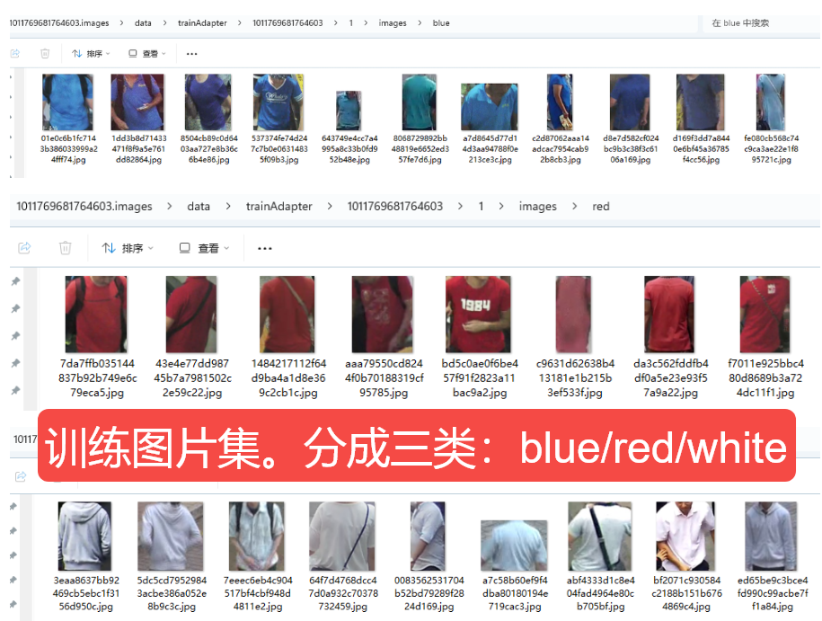
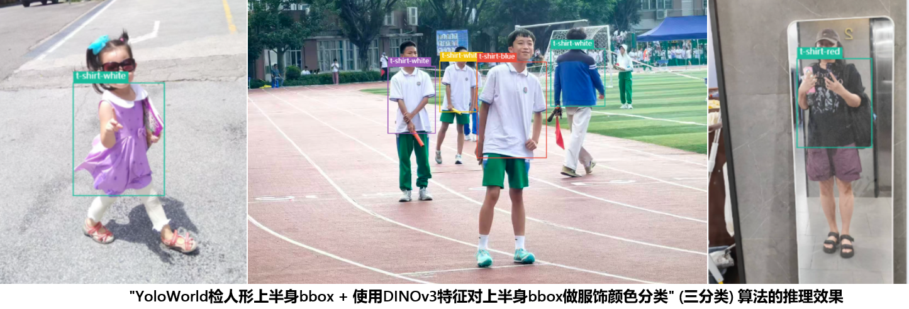

2026.01.25~01.28, 长沙小伙伴在鸿羽生产力平台上做了”Y+D"算法生产的尝试。具体的尝试过程如下：
根据尝试结果，这个算法的效果不尽人意。


这是该方案在实际部署时最致命的缺陷之一: 这个系统只认识“红”、“白”、“蓝”三个类别！而街道上的行人会穿着各种颜色的衣服：绿色、黄色、黑色、棕色、紫色等等。 强制选择的后果： 当一个穿着绿色T恤的行人经过时，您的系统会计算其特征 Fgreen 与 Cred,Cblue,Cwhite 的相似度。由于没有“绿色”原型，系统将被迫在已有的三个类别中做出选择。Fgreen 可能会因为在特征空间中与 Cblue 的距离最近，而被系统以高置信度（经过Softmax后）错误地分类为“蓝色”。
本质：Softmax是封闭集分类的专属激活函数，在你使用了softmax的这个算法中，你总是把服饰颜色空间当成一个封闭集，但这个封闭集却没覆盖实际的物理颜色类别空间，出现了逻辑漏洞；
原型中心的漂移与失效： 您在离线阶段计算的类别中心 Cred,Cblue,Cwhite，是基于您收集的标注数据集。如果这个数据集主要是在白天、晴天条件下采集的，那么这个“红色”原型 Cred 实际上是“晴天白天的红色”原型。当夜晚来临，一件红色衣服在路灯下的特征向量 Fnew_night_red，在特征空间中可能与 Cred 相距甚远，反而离代表“阴影下的白色”（即灰色）的 Cwhite 或者代表“深色”的 Cblue 更近，导致灾难性的分类错误。
类内方差急剧增大： 由于光照变化，以及同一种颜色本身存在很大的类内差异(如：红色包含粉红、酒红，橙红等差异很大的不同红色), 用一个聚类中心来代表整个类别是完全不够的。例如，一个“粉红色”的特征，可能在特征空间中位于“红色”中心和“白色”中心的中间位置，导致分类极其不稳定。
1. 摒弃Softmax归一化，直接使用余弦相似度进行类别判定和阈值校验；
2. 强制补充类别完整性：枚举所有物理实际颜色类别，或至少新增“其他类”覆盖未枚举的颜色。或者至少引入“其他”类别，将所有非红/白/蓝的衣服都标注为此类。但这会导致“other”类别的内部方差极大，几乎不可能用少数几个原型来代表。
3. 一个更现实的方法是，在Softmax分类之后，再加一个判断。如果一个新样本的特征，与它最相似的那个类别的原型的相似度，都没有超过一个预设的阈值T，那么就将其分类为“未知（Unknown）”。例如，虽然绿色衣服被判断为最像蓝色，但其与 Cblue 的余弦相似度只有0.4，低于阈值0.7，因此系统拒绝分类，输出“未知”。这能有效避免明显的错分，但需要精心调试阈值。这是保证系统不在其未知领域胡乱猜测的关键。如下图：
1. 不要为每个颜色类别只计算一个中心。在对每个类别的特征进行聚类时，设置K>1（例如，K=5）。这样，“红色”类别就可以由5个原型中心共同代表，分别对应“鲜红色”、“暗红色”、“粉红色”、“带图案的红色”等子类。
2. 在线推理时，计算新样本与所有原型（例如，3个类别 x 5个原型 = 15个原型）的相似度，然后取其与某个类别内所有原型的最高相似度作为该类别的得分，再送入Softmax。
1. DINOv3是通过自监督学习（对比学习）训练的，它的特征空间主要编码的是语义相似性而非颜色相似性。如：DINOv3对"狗"和"猫"的区分度应很高，但对"红色T恤"和"蓝色T恤"的区分度不确定也会很高，预训练时模型学到的可能是"这是衣服"而非"这是红色"。
2. DINOV3特征对颜色的敏感度究竟有多高，是否足以作为颜色分类的主要依据，是一个需要通过实验验证的关键问题。